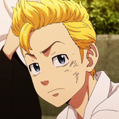
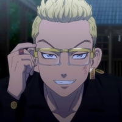
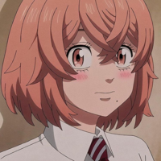
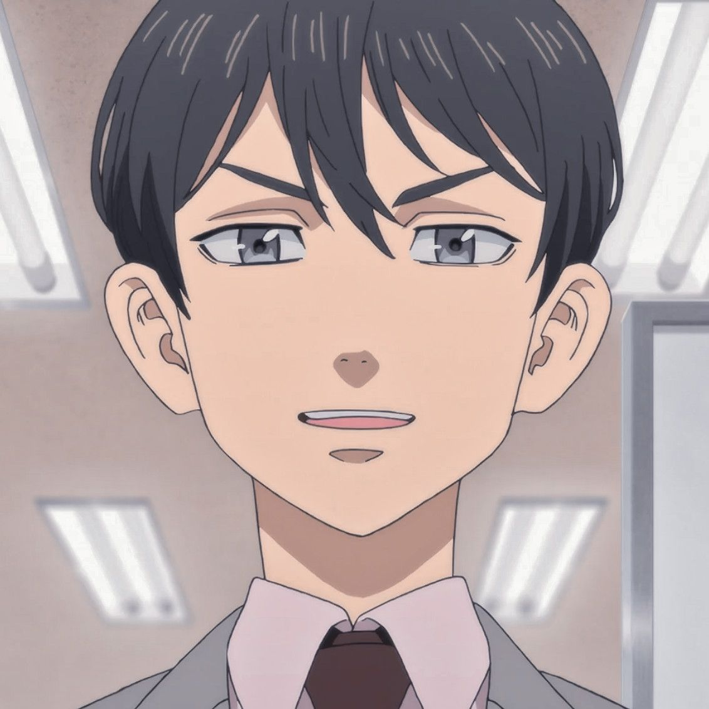
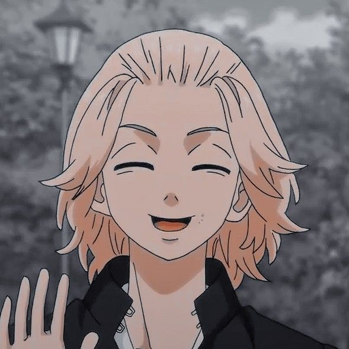
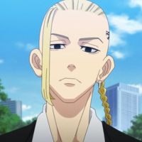
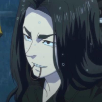
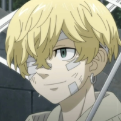
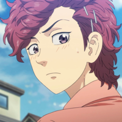

Takemichi Hanagaki
Takemichi é o protagonista da história e um jovem que pode viajar no tempo. Para salvar sua namorada
Hinata e, com o tempo, todos com quem ele se preocupa, ele decide se tornar um membro importante da
Gangue Manji de Tóquio.Ele tinha baixa autoestima, sempre se desculpando pelas menores coisas e chorando
com facilidade (assim foi apelidado de bebe chorão).

Tetta Kisaki
Kisaki é o vilão da trama, ele com odio e inveja decide tomar a Toman e cria uma nova era de
deliquentes maldosos.Mas qual a rasão disso?

Hinata Tachibana
Hinata é a namorada dos tempos do ginásio de Takemichi, sua morte é o motivo pivô do enredo da série.

Naoto Tachibana
Irmão de Hinata, Naoto é um dos personagens principais, quando ele e Takemichi apertam as mãos
desperta o poder de volta ao tempo.Alem do personagem também ajudar Takemichi na transição do futuro e
do passado.

Manjiro Sano (Mikey)
Mikey é um membro fundador e líder do Tokyo Manji Gang. Mikey geralmente é um adolescente despreocupado que adora brincar e pregar
peças em torno daqueles que considera seus amigos íntimos. Embora tenha uma aura imponente como líder de Toman, Mikey ainda é uma criança
no coração.

Ken Ryuguji (Draken)
Draken é o vice-presidente e um dos membros fundadores do Tokyo Manji Gang. Ele adora uma boa luta e adora enfrentar adversários fortes.
Além disso, ele também é rude com aqueles que considera inferiores e deixa claro que não gosta deles. Draken certamente é um dos personagens mais selvagens de Tokyo Revengers.

Keisuke Baji
Keisuke foi o capitão da Primeira Divisão da Gangue Manji Tokyo, sendo também um de seus membros fundadores.
Ele tem uma personalidade selvagem e adora a emoção da adrenalina. Além disso, ele também é um indivíduo muito perspicaz, vendo quem são os verdadeiros vilões que ameaçam Toman.

Chifuyu Matsuno
Chifuyu é um dos personagens mais importantes de Tokyo Revengers por ser o vice-capitão da Primeira Divisão da Gangue Manji de Tóquio.
Ele é uma pessoa leal que tem um comportamento calmo e lógico. Ele normalmente atua como um conselheiro de Takemichi e faz planos antes de entrar em ação.

Sendou Atsushi (Akkun)
Um dos melhores amigos de Takemichi e aparece como um importante coadjuvante., ele é um fiel amigo.